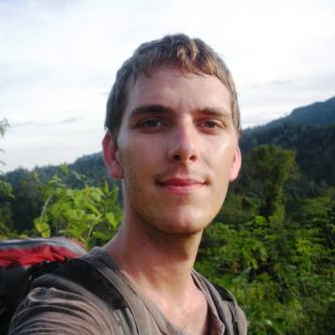

 NOAH THERIAULT is a sociocultural anthropologist and an Assistant Professor in OU’s Department of International & Area Studies, where he teaches courses on political ecology, environmental (in)justice, and Southeast Asia. His current research explores the cultural politics of environmental regulation and indigeneity in the Philippines. More info here: http://ntheriault.wordpress.com/.